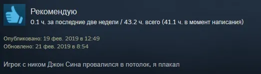
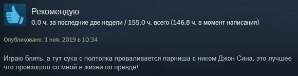
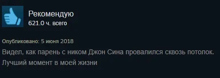
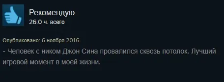

Вопрос дня
ВКонтакте
Tom Clancy's Rainbow Six® Siege
23 июля 2020 · №236 в выгрузке стены · оригинал во ВКонтакте ↗





Tom Clancy's Rainbow Six® Siege
✍🏻Доброе утро, почему все эти люди в своих обзорах пишут про одно и то же, явно вымешленное, игровое проишествие, неужели дело лишь в скудности фантазии авторов и в желании заполучить лайки к обзорам за счет заезженных шуток? Что думаете по этому поводу?
Обязательно выскажите свою позицию по данномуу вопросу в комментарии!
#ВопросДня@criticssteam
✍🏻Доброе утро, почему все эти люди в своих обзорах пишут про одно и то же, явно вымешленное, игровое проишествие, неужели дело лишь в скудности фантазии авторов и в желании заполучить лайки к обзорам за счет заезженных шуток? Что думаете по этому поводу?
Обязательно выскажите свою позицию по данномуу вопросу в комментарии!
#ВопросДня@criticssteam